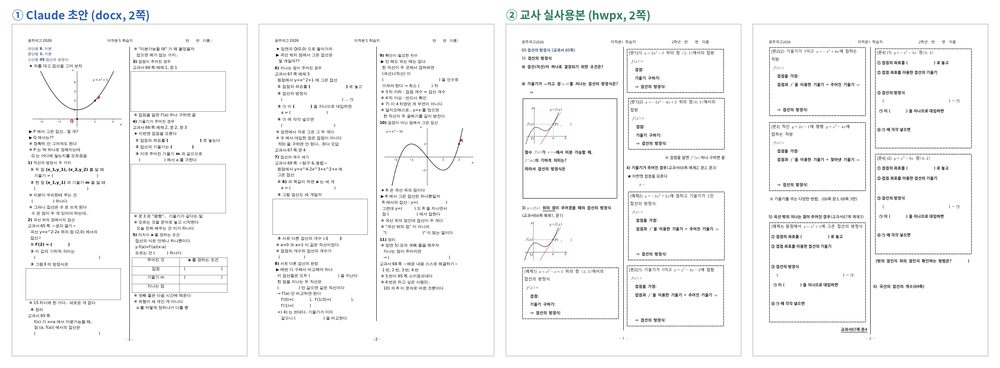
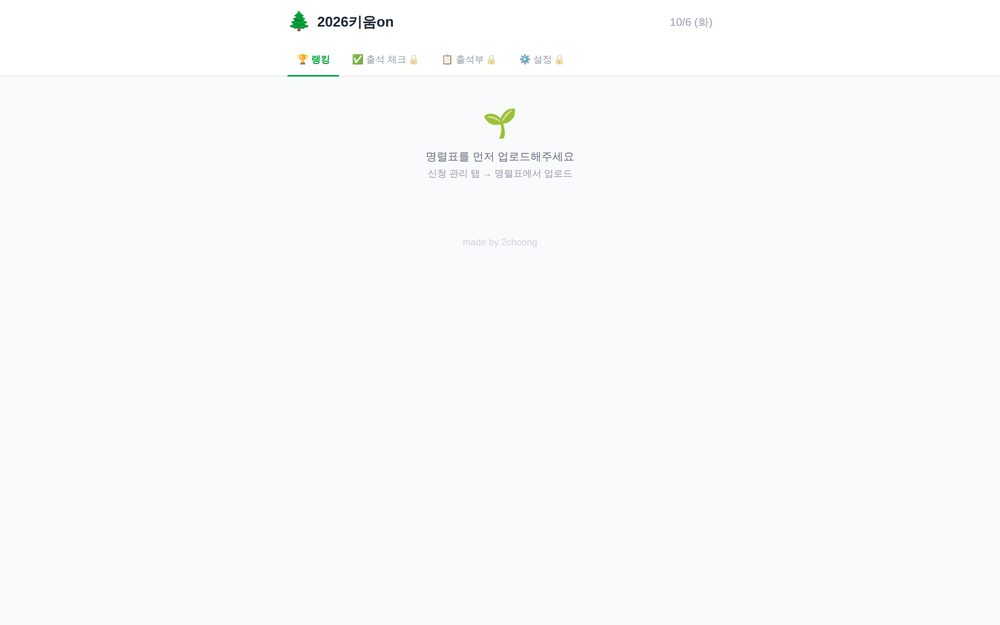
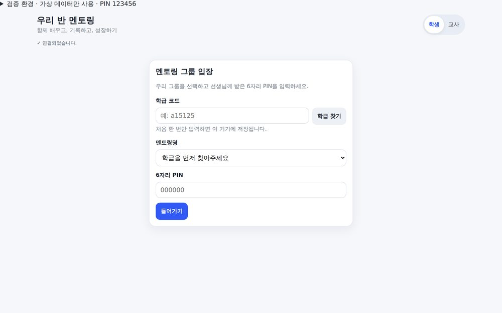
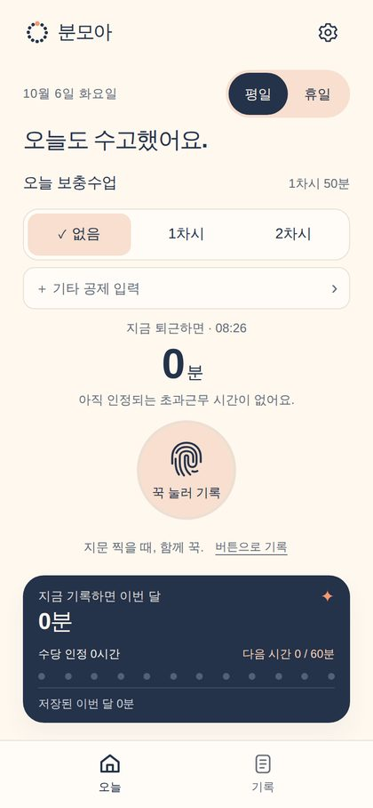

생성형 AI로 수업 자료 만들기
[수학01] 연수 자료 모음 · 2026. 10. 14.
오늘의 핵심 · 잘 쓰지 말고, 털어놓고 되묻게 하기
긴 프롬프트를 잘 쓰려고 애쓰지 마세요. 내 상황을 있는 그대로 말하고(휴대폰 음성 입력도 좋아요), 끝에 이 한 줄만 붙이세요.
바로 만들지 말고, 더 좋은 결과를 위해 나에게 필요한 것을 3개만 먼저 물어봐 줘.
결과를 받은 뒤 이렇게 말하면 다음에도 쓸 수 있는 내 프롬프트가 남습니다.
방금 대화 내용을 바탕으로, 다음에 비슷한 걸 만들 때 그대로 붙여 넣을 수 있는 프롬프트를 정리해 줘. 바뀌는 부분은 [ ]로 표시해 줘.
직접 만들어 보기
둘 중 하나를 골라 휴대폰의 Claude·ChatGPT 앱에서 해 보세요. 먼저 원본을 열어 보고, 내 단원으로 바꿔 털어놓으면 됩니다.
A. 실생활 맥락으로 만나는 개념
원본 보기: 매출의 변화로 만나는 곱의 미분법- 내 단원에서 "왜 이렇게 되지?"를 실생활로 보여 주고 싶은 개념을 하나 떠올립니다.
- 아래처럼 털어놓고, 맨 위의 '되묻기 한 줄'을 붙입니다.
미적분 곱의 미분법을 가르치는데, 학생들이 (fg)′ = f′g′라고 착각해. 매출 = 가격 × 판매량처럼 실생활 상황에서 가격과 판매량이 동시에 변할 때 매출이 어떻게 변하는지 직접 조작해 보면서, 왜 두 항이 더해지는지 깨닫게 하는 활동을 HTML 하나로 만들고 싶어. 휴대폰에서도 잘 보여야 해.
[ ] 바꾸기 예: 확률(경품 뽑기), 지수함수(조회수, 세균 증식), 수열(저축, 대출 상환)
B. 두 함수의 곱, 연속일까 불연속일까
원본 보기: 연속함수의 성질 보조 화면 (3번째 화면)- "불연속인 함수를 곱하면 무조건 불연속"이라는 착각을 깨는 활동입니다.
- 아래처럼 털어놓고, '되묻기 한 줄'을 붙입니다.
미적분 연속함수의 성질 수업이야. 학생들이 "연속 × 불연속은 불연속", "불연속 × 불연속은 불연속"이라고 착각해. 실제로는 정해지지 않잖아(f = 0이면 fg = 0, 부호함수를 제곱하면 1). 두 함수를 고르면 각각의 그래프와 곱의 그래프가 함께 그려지고, 학생이 먼저 연속/불연속을 예측한 뒤 확인하는 HTML 활동을 만들고 싶어. 휴대폰에서도 잘 보여야 해.
AI가 만든 예시 함수가 정말 연속·불연속인지 꼭 직접 확인하세요. AI도 이 착각을 그대로 따라 할 때가 있습니다.
제가 만든 것들
모두 AI와 대화하며 만들었고, 수업과 업무에 실제로 쓰고 있습니다.
① 대화로 만든 수업 화면
② 파일을 주고 맡긴 것
학습지: 학급 구성, 수업 철학, 학습지 형식을 '기준 파일'로 정리해 두고, 차시마다 한 줄로 요청합니다. 그래도 최종본은 교사가 만듭니다.

세특: 작성 규칙·어휘·점검표를 파일로 두고, 학생별 근거 파일에 있는 내용만으로 쓰게 합니다. 문장마다 근거를 대조해 부풀린 표현은 ⚠️로 표시하고, 바이트는 규칙대로 계산합니다. 실명 대신 번호나 가명을 쓰고, 학교 지침을 먼저 확인하세요.
③ 앱까지 만든 것



지금 보고 계신 이 페이지도 같은 방식으로 만들어 링크로 나눠 드린 것입니다. 시작하는 법은 준비물 안내를 보세요.
꼭 지킬 세 가지
- 개인정보: 학생 실명·성적은 AI에 넣지 않고, 공개된 곳에는 절대 올리지 않습니다.
- 검토 책임: AI 결과는 초안입니다. 최종 판단은 교사가 합니다.
- 대화를 남기기: 좋은 대화가 끝나면 내 프롬프트, 더 나아가 기준 파일로 정리해 둡니다.
앱 이름·요금·기능은 자주 바뀝니다. 2026년 10월 기준으로 작성했습니다.